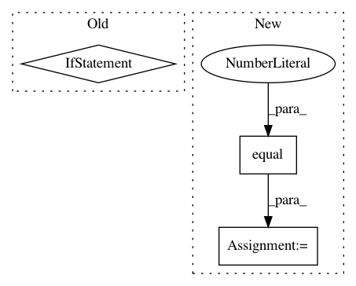

2fe1f942de95b3fe11acb4881c8f18f65d73bd8e,deepexplain/tensorflow/methods.py,,deepexplain_grad,#Any#Any#,109
Before Change
cases = OrderedDict(
(
(tf.equal(mode, flag), lambda: method_class.nonlinearity_grad_override(op, grad))
for method, (method_class, flag) in attribution_methods.items()
)
)
return tf.case(cases, default=lambda: grad * grad_activation(op.name)(op.inputs[0]))
After Change
input = op.inputs[0]
return grad * grad_activation(op.name)(input)
cases = OrderedDict({
tf.equal(mode, 0): (lambda: DummyZero.nonlinearity_grad_override(op, grad)),
tf.equal(mode, 1): (lambda: Saliency.nonlinearity_grad_override(op, grad)),
tf.equal(mode, 2): (lambda: GradientXInput.nonlinearity_grad_override(op, grad)),
tf.equal(mode, 3): (lambda: IntegratedGradients.nonlinearity_grad_override(op, grad)),
tf.equal(mode, 4): (lambda: EpsilonLRP.nonlinearity_grad_override(op, grad)),
})
return tf.case(cases, default=default, exclusive=True)
In pattern: SUPERPATTERN
Frequency: 3
Non-data size: 3
Instances
Project Name: marcoancona/DeepExplain
Commit Name: 2fe1f942de95b3fe11acb4881c8f18f65d73bd8e
Time: 2017-11-03
Author: marco.ancona@inf.ethz.ch
File Name: deepexplain/tensorflow/methods.py
Class Name:
Method Name: deepexplain_grad
Project Name: IndicoDataSolutions/finetune
Commit Name: dd70d3652d2ef6ea57618d08ee070e8642c08b9d
Time: 2019-06-07
Author: madison@indico.io
File Name: finetune/nn/target_blocks.py
Class Name:
Method Name: sequence_labeler
Project Name: broadinstitute/keras-rcnn
Commit Name: df93c4e61e7ca1db25f1ee346ac0516685498b02
Time: 2017-08-15
Author: allen.goodman@icloud.com
File Name: keras_rcnn/backend/tensorflow_backend.py
Class Name:
Method Name: bbox_transform_inv